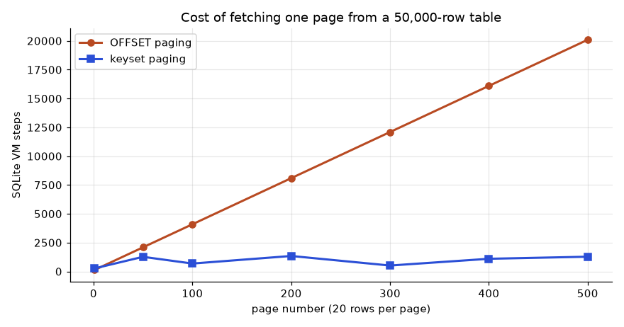
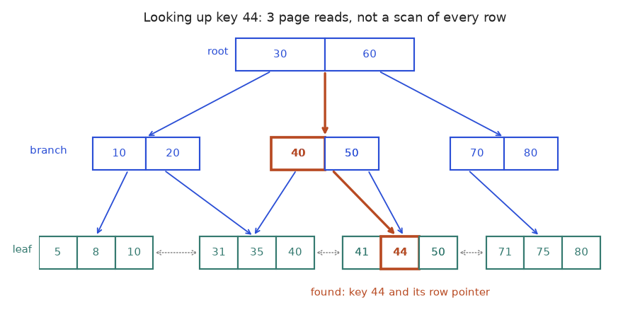
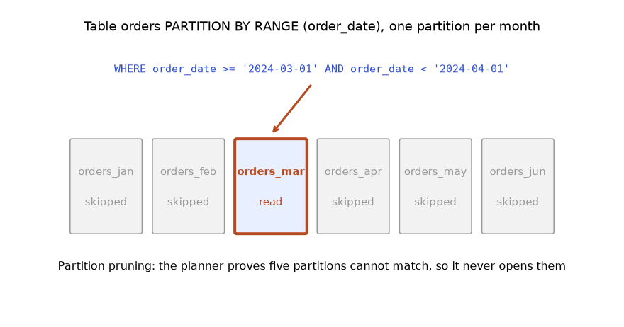

You already know how to find a bottleneck: measure, change one thing, measure again. This chapter applies that same habit to the database. A report that took 10 seconds in testing will take minutes with real data, and the usual cause is that the database reads every row when it could read a few. You will learn what an index is, how to see the database's plan with EXPLAIN, how to write queries the planner can speed up, and when an index makes things worse. By the end you can take a slow query, prove why it is slow, fix it, and show the before and after numbers.
Examples run in SQLite 3.51 using EXPLAIN QUERY PLAN. PostgreSQL's EXPLAIN ANALYZE is described but not run here, and I do not invent its numbers. Timings below are real runs on my laptop: your numbers will differ, but the ratios will look alike.
Running example. A table big with 200,000 rows, built so you can reproduce it:
CREATE TABLE big (id INTEGER PRIMARY KEY, customer_id INTEGER,
amount INTEGER, status TEXT, created TEXT);
WITH RECURSIVE n(i) AS (SELECT 1 UNION ALL SELECT i+1 FROM n WHERE i < 200000)
INSERT INTO big
SELECT i, i % 5000, (i*37) % 1000,
CASE WHEN i % 10 = 0 THEN 'refunded' ELSE 'paid' END,
date('2024-01-01', '+' || (i % 365) || ' days')
FROM n;There are 5,000 customers (so each has 40 rows), 10% of rows are refunded, and created spans one year. We also use the small shop tables from Chapter 2.
SCAN): read every row.SEARCH ... USING INDEX): use the index to jump to matching rows.customer_id = 42 keeps 40 of 200,000 (0.02%): very selective. status = 'paid' keeps 90%: not selective.CREATE INDEX idx_name ON table(column); builds a sorted copy of that column plus a pointer to each row. Lookups use the sorted order to jump. The cost is paid on writes: every INSERT, UPDATE of an indexed column and DELETE must also change each index.
| Item | Example | Where it appears in the job |
|---|---|---|
| Primary key index | orders(order_id) | automatic: every PK and UNIQUE has an index |
| Foreign key column | orders(customer_id) | joins and cascades; PostgreSQL does not index FKs for you |
| Time column | events(created) | dashboards filtering "last 7 days" |
| Search column | users(email) | login lookup |
Problem 10.1.1 Find the rows of customer 42. Predict the plan before and after creating an index. Before: the planner must scan. After: it can search.
EXPLAIN QUERY PLAN SELECT * FROM big WHERE customer_id = 42;
CREATE INDEX idx_big_cust ON big(customer_id);
EXPLAIN QUERY PLAN SELECT * FROM big WHERE customer_id = 42;QUERY PLAN
`--SCAN big
QUERY PLAN
`--SEARCH big USING INDEX idx_big_cust (customer_id=?)SCAN big means all 200,000 rows are read.SEARCH ... USING INDEX means the planner jumps to the 40 matching rows.How much faster? I ran each query in a Python loop and averaged:
no index : 4.237 ms
with index: 0.029 ms
rows: 40Problem 10.1.2 (the cost side) Insert 100,000 rows into a table with 0, 2, and 4 indexes. Predict: more indexes, slower inserts.
0 indexes: insert 100,000 rows in 0.05 s
2 indexes: insert 100,000 rows in 0.12 s
4 indexes: insert 100,000 rows in 0.21 s| Situation | Why an index does not help |
|---|---|
| Tiny table (hundreds of rows) | a scan is as fast as a lookup |
Low selectivity (status with 2 values, 90% paid) | the planner reads most rows anyway; it ignores the index |
| Column that is constantly updated | each update also rewrites the index |
| Write-heavy table with rare reads | write slowdown beats read speedup |
| Query returns a large share of the table | a sequential scan is cheaper than jumping 100,000 times |
| Type | Good for | Notes |
|---|---|---|
| B-tree (default) | =, <, >, BETWEEN, ORDER BY, prefix LIKE 'abc%' | works for almost everything |
| Hash (PostgreSQL) | = only | rarely better than B-tree |
| GIN (PostgreSQL) | JSONB contents, arrays, full-text search | "which rows contain this word / key" |
| GiST (PostgreSQL) | geometry, ranges, nearest-neighbour | PostGIS uses it |
GIN, GiST and hash indexes are PostgreSQL features and are not run here.
B-tree on customer_id (3 levels shown):
[ 2500 ] <- root: go left or right
/ \
[ 1200 | ... ] [ 3800 | ... ] <- branch pages
/ | \ / | \
[leaf pages: sorted keys + row pointers] <- 42 lives in one leafStart at the root, compare, go down. Each step skips most of the data. Leaf pages are linked in sorted order, so a range like BETWEEN 100 AND 199 reads leaves one after another.
In every interview "how do you speed up a slow query?" starts with "look at the plan, then think about an index." On the job, missing indexes on foreign-key and timestamp columns are the number one cause of slow dashboards.
email makes login O(log n) and prevents duplicate accounts.SCAN big in a plan mean?Answer: The database reads every row of big.
Answer: Every insert must also add an entry to each index.
Answer: Low selectivity: the filter keeps about half the rows, so the planner reads most of the table anyway.
ON big(customer_id, amount).COVERING INDEX; PostgreSQL: Index Only Scan).lower(email).Problem 10.2.1 Create idx_big_cust_amt on (customer_id, amount). Which of these queries can use it?
CREATE INDEX idx_big_cust_amt ON big(customer_id, amount);
-- Q1
EXPLAIN QUERY PLAN SELECT * FROM big WHERE amount = 500;
-- Q2
EXPLAIN QUERY PLAN SELECT * FROM big WHERE customer_id = 42 AND amount > 900;Q1: `--SCAN big
Q2: `--SEARCH big USING INDEX idx_big_cust_amt (customer_id=? AND amount>?)amount, the second column. By the leftmost prefix rule the index is unusable, so the result is a full scan.= and the second with >. Both parts of the index are used.= first, then the range column. For WHERE customer_id = ? AND amount > ? the order (customer_id, amount) is right. If you also filter on amount alone often, create a separate index on amount.Problem 10.2.2 (covering) We need only customer_id and amount for customer 42. With the single-column index the planner must jump to the table for each row. With the composite index the answer is entirely inside the index.
EXPLAIN QUERY PLAN SELECT customer_id, amount FROM big WHERE customer_id = 42;`--SEARCH big USING COVERING INDEX idx_big_cust_amt (customer_id=?)COVERING INDEX says the table was never touched. A timing for 4,000 rows (customers 100 to 199) with SELECT * against selecting only the two covered columns:
SELECT * : 2.645 ms
2 cols, covered: 0.918 msSELECT * has a hidden cost: it blocks covering indexes and moves more data over the network. In PostgreSQL you can add non-key columns with CREATE INDEX ... ON t(a) INCLUDE (b) (not run here).Problem 10.2.3 (partial index) Refunds are 10% of rows and we always look up refunds by customer. Index only those rows.
CREATE INDEX idx_refunded ON big(customer_id) WHERE status = 'refunded';
EXPLAIN QUERY PLAN SELECT * FROM big WHERE status = 'refunded' AND customer_id = 40;`--SEARCH big USING INDEX idx_refunded (customer_id=?)ANALYZE showed 20000 40 for it, see 10.3).status = 'refunded'), so the planner knows the partial index is valid.Problem 10.2.4 (expression index) WHERE lower(status) = 'paid' cannot use a plain index on status, because the index stores status, not lower(status). Create an index on the expression:
CREATE INDEX idx_lower_status ON big(lower(status));
EXPLAIN QUERY PLAN SELECT * FROM big WHERE lower(status) = 'paid' AND id < 0;`--SEARCH big USING INDEX idx_lower_status (<expr>=? AND rowid<?)(I added id < 0 only so the planner would choose to use it; without it, paid matches 90% of rows and a scan is cheaper, as the earlier table predicts.) The query's expression must match the index's expression exactly.
(a, b) and expecting WHERE b = ... to be fast. Always check the plan with EXPLAIN. Also remember that a multi-column index is only as useful as its leftmost columns.Choosing the order of columns in a composite index is a daily decision for backend and data engineers. The rule of thumb: equality columns first, range column last, and add ORDER BY columns next if you want to avoid a sort.
(date, product_id, amount) makes a daily-sales dashboard read only the index.WHERE status = 'pending' keeps a job-queue table lookup tiny.lower(email) for case-insensitive de-duplication.(a, b), does WHERE b = 5 use it?Answer: No. Only filters that include the first column a can use it.
Answer: Reading the table rows at all, since the index has every needed column.
WHERE lower(email) = ... match an expression index exactly?Answer: The index stores the computed value, so only the same expression can search it.
EXPLAIN. After the trip, it can tell you how long each leg really took. That is EXPLAIN ANALYZE. A plan is the database's chosen route. When a query is slow, you read the plan to find which step is the slow leg, just as you read a delivery report to find the slowest leg of a journey.ANALYZE.| Command | Does it run the query? | Use |
|---|---|---|
EXPLAIN SELECT ... (PostgreSQL) | no | see the plan, with estimates |
EXPLAIN ANALYZE SELECT ... (PostgreSQL) | yes | real times and actual row counts |
EXPLAIN QUERY PLAN SELECT ... (SQLite) | no | a short plan summary |
EXPLAIN ANALYZE on an UPDATE or DELETE in production. It really executes the statement. Wrap it: BEGIN; EXPLAIN ANALYZE UPDATE ...; ROLLBACK;.I do not show a made-up PostgreSQL plan with numbers. Here is what each part of a real EXPLAIN ANALYZE line means, using the standard shape:
Index Scan using idx_big_cust on big (cost=0.42..48.9 rows=40 width=32)
(actual time=0.02..0.05 rows=40 loops=1)
Index Cond: (customer_id = 42)
Planning Time: ...
Execution Time: ...(The ... mean "your numbers.")
| Piece | Meaning |
|---|---|
node name (Seq Scan, Index Scan, Index Only Scan, Bitmap Heap Scan) | how rows are fetched |
cost=a..b | startup cost .. total cost (estimate) |
rows= (estimated) vs actual ... rows= | planner guess vs reality: compare them first |
loops= | how many times this node ran; multiply actual time by loops |
Filter: / Rows Removed by Filter: | rows read and thrown away: large numbers mean a missing index |
Buffers: (with EXPLAIN (ANALYZE, BUFFERS)) | pages read from cache vs disk |
Sort Method: external merge Disk | the sort spilled to disk: more work_mem or an index |
Read the plan from the innermost, most-indented node outward, and ask three questions: where is the time, where is the estimate wrong, and are many rows read to keep few?
| Algorithm | How it works | Good when |
|---|---|---|
| Nested loop | for each row on the left, look up matches on the right | left side is small and the right side has an index |
| Hash join | build a hash table from the smaller input, probe with the other | large inputs, equality joins, no index |
| Merge join | sort both sides and walk them together | both inputs already sorted (for example by an index) |
PostgreSQL chooses among all three. SQLite uses nested loops, creating a temporary index when helpful. A hash or merge join in PostgreSQL is not run here.
Problem 10.3.1 Join customers in Pune to their orders. Predict first: SQLite loops over customers filtered by city, and for each, looks for orders. Without an index on orders.customer_id it has to scan orders; with one, it can search.
EXPLAIN QUERY PLAN
SELECT c.name, o.order_id
FROM customers c JOIN orders o ON o.customer_id = c.customer_id
WHERE c.city = 'Pune';QUERY PLAN
|--SCAN c
`--SCAN oNow index the foreign key and ask again:
CREATE INDEX idx_orders_cust ON orders(customer_id);QUERY PLAN
|--SCAN c
`--SEARCH o USING COVERING INDEX idx_orders_cust (customer_id=?)SCAN c reads 8 customers (tiny; an index is pointless here).SCAN o (14 orders, once per customer). With the index it becomes SEARCH o, a jump per customer.Problem 10.3.2 (sorting) Does ORDER BY cost anything?
EXPLAIN QUERY PLAN SELECT * FROM big WHERE customer_id = 42 ORDER BY amount;|--SEARCH big USING INDEX idx_big_cust (customer_id=?)
`--USE TEMP B-TREE FOR ORDER BYUSE TEMP B-TREE FOR ORDER BY).SELECT * FROM big ORDER BY amount, which gives SCAN big plus the temp sort) is not. The composite index (customer_id, amount) from 10.2 would return the 40 rows already sorted and remove the sort step.The planner guesses how many rows each filter keeps, using statistics. If the statistics are old (you just loaded 10 million rows), the guess is wrong and it picks a bad plan. ANALYZE refreshes them:
ANALYZE;
SELECT tbl, idx, stat FROM sqlite_stat1 WHERE tbl = 'big';tbl idx stat
--- ---------------- -------------
big idx_lower_status 200000 100000
big idx_refunded 20000 40
big idx_big_cust 200000 40
big idx_created 200000 548 How to read stat: the first number is the number of rows in the index; the second is the average number of rows per key value. idx_big_cust has 40 rows per customer: the planner now knows a customer lookup is very selective. idx_lower_status has 100,000 rows per value (two values only), so the planner knows it is nearly useless. idx_created averages 548 rows per date.
In PostgreSQL, autovacuum runs ANALYZE and VACUUM in the background. VACUUM reclaims space from dead row versions left behind by UPDATE and DELETE (see MVCC in Chapter 9). After a big load, run ANALYZE table; yourself (not run here).
When a query suddenly gets slower with no code change, the first suspects are stale statistics, data growth that tipped the plan from index to scan, and bloat. Reading a plan is how you tell which.
ANALYZE after bulk loads; check plans of slow pipeline steps.EXPLAIN (ANALYZE, BUFFERS) of the slowest query found in the monitoring dashboard and attach it to the ticket.EXPLAIN and EXPLAIN ANALYZE in PostgreSQL?Answer: EXPLAIN only shows the plan; EXPLAIN ANALYZE runs the query and adds real times and row counts.
Answer: Stale or missing statistics; run ANALYZE.
Answer: Nested loop.
EXPLAIN shows where the time goes.Sargable means "Search ARGument ABLE": the filter is written so an index can be used. The rule: keep the indexed column bare on one side of the comparison. Wrapping it in a function hides it from the index.
| Not sargable (index ignored) | Sargable rewrite |
|---|---|
WHERE substr(created,1,10) = '2024-03-01' | WHERE created >= '2024-03-01' AND created < '2024-03-02' |
WHERE amount + 10 = 510 | WHERE amount = 500 |
WHERE created LIKE '%03%' | (leading wildcard: no B-tree help; use full-text or trigram index in PostgreSQL) |
WHERE lower(email) = 'a@x.com' | add an expression index, or store lowercase |
Problem 10.4.1 Count the rows for one date. Compare the function version with the range version, with idx_created on created.
-- slow shape
SELECT * FROM big WHERE substr(created,1,10) = '2024-03-01';
-- fast shape
SELECT * FROM big WHERE created >= '2024-03-01' AND created < '2024-03-02';one day, function on column: 10.966 ms
one day, range : 0.682 ms
548 rowssubstr(...) on all 200,000 rows, so the plan is SCAN big (we saw this earlier: it prints SCAN big even though idx_created exists).SEARCH big USING INDEX idx_created (created>? AND created<?).ANALYZE statistic above.LIKE '2024-03%' looks like a prefix search that a B-tree should help. In SQLite it still printed SCAN big, because by default SQLite's LIKE ignores case and the index uses case-sensitive order. In PostgreSQL the index may need text_pattern_ops or a "C" collation. The lesson: read the plan, never assume.| Habit | Better | Why |
|---|---|---|
SELECT * | list the needed columns | less data moved; allows covering indexes |
OFFSET 100000 LIMIT 20 | WHERE id > :last_id ORDER BY id LIMIT 20 | OFFSET still reads and drops the skipped rows (keyset pagination) |
IN (SELECT ...) on large sets, or correlated subquery in SELECT | join or EXISTS (Chapter 5) | planner can pick a better strategy |
COUNT(*) on a huge table for "does any row exist?" | EXISTS (SELECT 1 ... LIMIT 1) | stops at the first match |
| Many tiny queries in an app loop | one set-based query | each round trip has fixed latency |
| Filtering after a join | filter before it (WHERE on the base table) | smaller join input |
Problem 10.4.2 (the N+1 problem) An app needs the total amount for customers 0 to 4,999. Version A runs one query per customer (5,000 queries). Version B runs one query.
-- B
SELECT sum(amount) FROM big WHERE customer_id < 5000;99900000 99900000 N+1: 0.090 s, one query: 0.036 spg_dump (logical) or file-level base backups with WAL archiving (physical). All not run here. Learn them after the basics in this chapter feel easy.Analytics interviews ask "this query takes 10 minutes: what do you do?" The answer is the five-step method above, with these checks in order: plan, row counts, sargable filter, index, fewer columns, pre-aggregation. The skill-map goal "optimize a slow query from 10 s to under 1 s with EXPLAIN ANALYZE" is exactly this loop.
WHERE year(created) = 2024 slow on an indexed column?Answer: The function hides the column from the index, so every row is computed; rewrite as a date range.
Answer: One query to get a list, then one more query per item, so N+1 calls instead of one.
Answer: If the filter keeps a large share of rows, jumping through the index costs more than a straight scan.
WHERE test is written so that an index can jump. This section makes you measure the difference instead of trusting it.To measure work without depending on a fast or slow laptop, the lab counts SQLite virtual-machine steps: every query is compiled into small instructions, and we count how many run. Fewer steps means less work. The exact counts depend on your SQLite version (this run used 3.50.4), so compare the ratios, not the digits. PostgreSQL shows the same ideas through EXPLAIN ANALYZE (not run here).
The rule: an index stores the column value, so the test must compare the bare column with something. Wrap the column in a function or arithmetic and the database cannot use the sorted order.
| Slow form (index ignored) | Fast form (index usable) | Why |
|---|---|---|
WHERE substr(created,1,7) = '2024-03' | WHERE created >= '2024-03-01' AND created < '2024-04-01' | a date range is a contiguous slice of the sorted index |
WHERE lower(email) = 'a@x.com' | expression index on lower(email), same query | the index stores exactly what the query compares |
WHERE customer_id + 1 = 43 | WHERE customer_id = 42 | move arithmetic to the constant side |
WHERE name LIKE '%son' | WHERE name LIKE 'son%', or a trigram index (PostgreSQL pg_trgm) | a B-tree can only follow a known prefix |
WHERE a = 1 OR b = 2 | UNION ALL of two queries, or one index on each column (PostgreSQL combines them with a bitmap OR) | a single B-tree cannot answer two different columns at once |
Problem 10.5.1 Run the first three rewrites on a 50,000-row table and compare steps. Predict first: the slow forms touch all 50,000 rows (about 200,000 steps, four per row), the fast forms touch a small slice.
import sqlite3, random
random.seed(7)
db = sqlite3.connect(":memory:", isolation_level=None)
db.execute("CREATE TABLE big (id INTEGER PRIMARY KEY, customer_id INT, created TEXT, email TEXT, amount INT)")
rows = [(i, random.randint(1, 2000), "2024-%02d-%02d" % (random.randint(1, 12), random.randint(1, 28)),
"user%d@Mail.com" % i, random.randint(10, 999)) for i in range(1, 50001)]
db.executemany("INSERT INTO big VALUES (?,?,?,?,?)", rows)
def cost(q, args=()):
"""count SQLite virtual-machine steps: a stable stand-in for 'work done'"""
n = [0]
def tick():
n[0] += 1
return 0
db.set_progress_handler(tick, 1)
db.execute(q, args).fetchall()
db.set_progress_handler(None, 0)
return n[0]
def plan(q):
return db.execute("EXPLAIN QUERY PLAN " + q).fetchall()[0][3]
tests = [
("function on column", "SELECT count(*) FROM big WHERE substr(created, 1, 7) = '2024-03'",
"SELECT count(*) FROM big WHERE created >= '2024-03-01' AND created < '2024-04-01'", None),
("lower() on column", "SELECT count(*) FROM big WHERE lower(email) = 'user77@mail.com'",
"SELECT count(*) FROM big WHERE lower(email) = 'user77@mail.com'",
"CREATE INDEX i_lemail ON big(lower(email))"),
("arithmetic on column", "SELECT count(*) FROM big WHERE customer_id + 1 = 43",
"SELECT count(*) FROM big WHERE customer_id = 42", None),
]
db.execute("CREATE INDEX i_created ON big(created)")
db.execute("CREATE INDEX i_cust ON big(customer_id)")
for name, bad, good, new_index in tests:
print(name)
print(" slow :", cost(bad), "steps |", plan(bad))
if new_index:
db.execute(new_index)
print(" (created the expression index)")
print(" fast :", cost(good), "steps |", plan(good))function on column
slow : 204116 steps | SCAN big USING COVERING INDEX i_created
fast : 12322 steps | SEARCH big USING COVERING INDEX i_created (created>? AND created<?)
lower() on column
slow : 200013 steps | SCAN big
(created the expression index)
fast : 18 steps | SEARCH big USING COVERING INDEX i_lemail (<expr>=?)
arithmetic on column
slow : 200031 steps | SCAN big USING COVERING INDEX i_cust
fast : 64 steps | SEARCH big USING COVERING INDEX i_cust (customer_id=?)| Step 1 | The first pair filters by month. substr(created,1,7) is a function of the column, so the plan says SCAN and every row is read. The range form says SEARCH ... (created>? AND created<?): the index jumps to 2024-03-01 and stops at 2024-04-01. Steps fall from 204,116 to 12,322, about 17 times fewer. |
|---|---|
| Step 2 | The second pair uses the same query text. The only change is the new expression index on lower(email), which stores the lowercase value. The scan (200,013 steps) becomes a search (18 steps). You changed the index, not the query. |
| Step 3 | The third pair moves + 1 to the other side of the equals sign: 200,030 steps become 64. |
| Answer | Keep the column bare on one side of the comparison. If you cannot, index the expression. |
WHERE DATE(created_at) = '2024-03-15' or WHERE EXTRACT(YEAR FROM created_at) = 2024 on a large table. It works and returns correct rows, so nothing warns you, yet it reads every row. Right: WHERE created_at >= '2024-03-15' AND created_at < '2024-03-16'. A second trap is a type mismatch, such as comparing a text column to a number (WHERE phone = 5551234): the database may convert every stored value and skip the index.Problem 10.5.2 (find the slow part) A teammate reports that SELECT * FROM big WHERE amount * 1.1 > 500 is slow even though amount is indexed. Fix it. Predict first: the multiplication is on the column side.
| Idea | Divide the constant instead: amount * 1.1 > 500 is the same as amount > 500 / 1.1. |
|---|---|
| Rewrite | WHERE amount > 454.55 (500 / 1.1 = 454.545..., so use 454.55 for integers: amount >= 455 because 455 x 1.1 = 500.5 is above 500 and 454 x 1.1 = 499.4 is not). |
| Check | Integer amounts 455 and up pass the original test, 454 and below fail. Both forms return the same rows, and the second can use an index on amount. |
A web page shows 20 rows at a time. The obvious query is ORDER BY created, id LIMIT 20 OFFSET 9980. The database cannot skip 9,980 rows without walking past them, so page 500 costs 500 times what page 1 costs. Keyset pagination (also called the seek method) remembers the last row of the previous page and asks for rows after it, so the index jumps straight there.
Problem 10.5.3 Fetch page 1, page 100 and page 500 both ways. Predict first: OFFSET cost grows in proportion to the page number, keyset cost stays about the same.
import sqlite3, random
random.seed(7)
db = sqlite3.connect(":memory:", isolation_level=None)
db.execute("CREATE TABLE big (id INTEGER PRIMARY KEY, customer_id INT, created TEXT, email TEXT, amount INT)")
rows = [(i, random.randint(1, 2000), "2024-%02d-%02d" % (random.randint(1, 12), random.randint(1, 28)),
"user%d@Mail.com" % i, random.randint(10, 999)) for i in range(1, 50001)]
db.executemany("INSERT INTO big VALUES (?,?,?,?,?)", rows)
def cost(q, args=()):
"""count SQLite virtual-machine steps: a stable stand-in for 'work done'"""
n = [0]
def tick():
n[0] += 1
return 0
db.set_progress_handler(tick, 1)
db.execute(q, args).fetchall()
db.set_progress_handler(None, 0)
return n[0]
def plan(q):
return db.execute("EXPLAIN QUERY PLAN " + q).fetchall()[0][3]
db.execute("CREATE INDEX i_ci ON big(created, id)")
for page in (1, 100, 500):
off = (page - 1) * 20
a = cost("SELECT id, created FROM big ORDER BY created, id LIMIT 20 OFFSET ?", (off,))
last = db.execute("SELECT created, id FROM big ORDER BY created, id LIMIT 1 OFFSET ?", (max(off - 1, 0),)).fetchone()
k = cost("SELECT id, created FROM big WHERE (created, id) > (?, ?) ORDER BY created, id LIMIT 20", last)
print("page %3d OFFSET: %6d steps keyset: %5d steps" % (page, a, k))page 1 OFFSET: 130 steps keyset: 263 steps
page 100 OFFSET: 4090 steps keyset: 765 steps
page 500 OFFSET: 20090 steps keyset: 738 steps| Step 1 | OFFSET steps grow by about 4,000 per 100 pages: 130, 4,090, 20,090. That is 200 steps per page of skipped rows. |
|---|---|
| Step 2 | The keyset form uses WHERE (created, id) > (last_created, last_id), a row-value comparison that the index on (created, id) answers by seeking. Its cost stays under about 1,400 steps whatever the page (it is not perfectly flat here because many rows share one date). On page 1 it is slightly more expensive, since there is no previous row to seek from. |
| Answer | Use keyset for feeds and infinite scroll. Keep OFFSET for small tables or when users must jump to page 37. |

How to read it: the orange line is OFFSET paging: it climbs in a straight line because each deeper page skips more rows. The blue line is keyset paging: it wobbles but never climbs. The vertical gap at page 500 is the price of skipping 9,980 rows.
created alone and ten rows share one timestamp, rows can be skipped or repeated at the page boundary. Always add a unique tie-breaker (created, id) to both the ORDER BY and the WHERE. Also, row-value comparison (a, b) > (x, y) works in PostgreSQL, MySQL and SQLite but not in SQL Server, where you write a > x OR (a = x AND b > y).Before running a query the planner estimates how many rows each step returns, using statistics collected by ANALYZE. If the estimate is far from reality, it picks a bad plan: it scans when it should seek, or the other way round. The classic cause is skew: 99 percent of rows share one value, and statistics that only keep an average cannot see that.
Problem 10.5.4 A table has 50,000 events, 99 percent with status done and 1 percent failed, with an index on status. Compare the plans for both values before and after ANALYZE. Predict first: both look the same to a planner that only knows the average.
import sqlite3
db = sqlite3.connect(":memory:", isolation_level=None)
db.execute("CREATE TABLE ev (id INTEGER PRIMARY KEY, status TEXT, v INT)")
db.executemany("INSERT INTO ev VALUES (?,?,?)", [(i, 'done' if i % 100 else 'failed', i) for i in range(1, 50001)])
db.execute("CREATE INDEX i_status ON ev(status)")
def run(label):
for st in ("done", "failed"):
q = "SELECT count(*), sum(v) FROM ev WHERE status = '%s'" % st
n = [0]
def tick():
n[0] += 1
return 0
db.set_progress_handler(tick, 1)
db.execute(q).fetchall()
db.set_progress_handler(None, 0)
p = db.execute("EXPLAIN QUERY PLAN " + q).fetchall()[0][3]
print(label, st.ljust(6), str(n[0]).rjust(7), "steps |", p)
run("before ANALYZE:")
db.execute("ANALYZE")
print(db.execute("SELECT tbl, idx, stat FROM sqlite_stat1").fetchall())
run("after ANALYZE:")before ANALYZE: done 297014 steps | SEARCH ev USING INDEX i_status (status=?)
before ANALYZE: failed 3013 steps | SEARCH ev USING INDEX i_status (status=?)
[('ev', 'i_status', '50000 25000')]
after ANALYZE: done 298513 steps | SCAN ev
after ANALYZE: failed 151513 steps | SCAN ev| Step 1 | Before ANALYZE SQLite has no statistics and uses the index for both values. For failed (500 rows) that is right: 3,013 steps. For done (49,500 rows) it is wasteful, 297,014 steps, because it hops from index to table 49,500 times. |
|---|---|
| Step 2 | ANALYZE stores '50000 25000': 50,000 rows, on average 25,000 rows per status value. Two values, so the average is exactly half the table. |
| Step 3 | With that average the planner decides an index is not worth it and scans for both. That helps done slightly (298,513 steps, about the same) but makes failed 50 times worse (151,513 vs 3,013). |
| Answer | Statistics are summaries, and summaries hide skew. PostgreSQL keeps a list of most common values and a histogram, so it knows that failed is rare; SQLite builds with STAT4 do something similar. Always compare estimated and actual row counts in EXPLAIN ANALYZE (not run here); a 10x gap is your signal. |
ANALYZE table because statistics may simply be old, (2) raise the detail with ALTER TABLE t ALTER COLUMN c SET STATISTICS 1000, (3) add extended statistics for correlated columns (CREATE STATISTICS s (dependencies) ON city, zip FROM t), because the planner multiplies the selectivities of two columns as if they were independent, and city and zip are not, (4) as a last resort rewrite the query. The autovacuum daemon runs ANALYZE automatically, but after a bulk load you should run it yourself. None of these commands were run here.
How to read it: start at the root and follow the arrow whose range contains 44 (between 30 and 60). The branch sends you between 40 and 50, and the leaf holds 44 with a pointer to the table row. That is three page reads. A real tree holds hundreds of keys per page, so even a billion-row table is only four or five levels deep. The dotted arrows between leaves are why range queries (BETWEEN, ORDER BY) are fast: after finding the start, walk sideways.
| Type | Best for | Does not help with |
|---|---|---|
| B-tree (default) | equality, ranges, ORDER BY, prefix LIKE 'abc%' | searching inside arrays or text, or the last letters of a string |
| Hash | equality only, small and fast keys | ranges, sorting (rarely better than B-tree) |
| GIN | many values per row: arrays, jsonb, full-text search, trigrams | range sorting; writes are slower |
| GiST | geometry, nearest-neighbour, ranges overlap (&&), exclusion constraints | exact equality on plain numbers |
| BRIN | huge tables whose physical order follows the column (logs by timestamp); the index is tiny | randomly ordered columns |
| Partial / expression | only some rows, or a computed value (Section 10.2) | queries that do not repeat the same condition |
Problem 10.6.1 Pick the index for each: (a) WHERE tags @> ARRAY['sale'] on a text-array column, (b) 2 billion sensor rows appended in time order, queried by time window, (c) WHERE email = ?, (d) find the 10 nearest shops to a point. Predict first: four different answers.
| (a) | GIN: it stores one entry per array element, so containment search is direct. |
|---|---|
| (b) | BRIN: it stores the min and max timestamp per block of pages, a few megabytes for terabytes of data. It only works because rows arrive in time order. |
| (c) | B-tree (hash would work for pure equality, but B-tree is the safe default and supports uniqueness). |
| (d) | GiST (or SP-GiST): it supports distance ordering with ORDER BY location <-> point LIMIT 10. |
Section 10.3 listed the three join algorithms. SQLite uses nested loops, so we can measure one. We join 2,000 customers to 50,000 orders and keep customers 1 to 50:
import sqlite3, random
random.seed(7)
db = sqlite3.connect(":memory:", isolation_level=None)
db.execute("CREATE TABLE cust (customer_id INTEGER PRIMARY KEY, name TEXT)")
db.executemany("INSERT INTO cust VALUES (?,?)", [(i, "c%d" % i) for i in range(1, 2001)])
db.execute("CREATE TABLE big (id INTEGER PRIMARY KEY, customer_id INT, created TEXT, email TEXT, amount INT)")
rows = [(i, random.randint(1, 2000), "2024-%02d-%02d" % (random.randint(1, 12), random.randint(1, 28)),
"user%d@Mail.com" % i, random.randint(10, 999)) for i in range(1, 50001)]
db.executemany("INSERT INTO big VALUES (?,?,?,?,?)", rows)
def cost(q):
n = [0]
def tick():
n[0] += 1
return 0
db.set_progress_handler(tick, 1)
db.execute(q).fetchall()
db.set_progress_handler(None, 0)
return n[0]
q = "SELECT count(*) FROM cust c JOIN big b ON b.customer_id = c.customer_id WHERE c.customer_id <= 50"
def plans(q):
return " ; ".join(r[3] for r in db.execute("EXPLAIN QUERY PLAN " + q).fetchall())
print("no index :", cost(q), "steps |", plans(q))
db.execute("CREATE INDEX i_cust ON big(customer_id)")
print("with index :", cost(q), "steps |", plans(q))no index : 251242 steps | SCAN b ; SEARCH c USING INTEGER PRIMARY KEY (rowid=?)
with index : 8613 steps | SEARCH b USING COVERING INDEX i_cust (customer_id<?) ; SEARCH c USING INTEGER PRIMARY KEY (rowid=?)| Step 1 | Without an index on big.customer_id the plan reads: SCAN b (all 50,000 orders, outer loop) then SEARCH c by primary key for each one. SQLite picked the big table as the outer loop because that is the cheapest order it could find. Cost: 251,242 steps. |
|---|---|
| Step 2 | With the index, the plan flips: SEARCH b USING COVERING INDEX i_cust (customer_id<?) reads only the orders of customers 1 to 50, then looks each customer up. Cost: 8,613 steps, about 29 times less. |
| Step 3 | Notice that the planner also chose a different join order. Join order is part of the plan and it changes when indexes change. |
| Answer | A nested loop is fast exactly when the inner side can be probed with an index (here the primary key of c). A hash join (PostgreSQL) instead builds a hash table of the smaller input once and probes it, which is why it wins for big unindexed equality joins. A merge join wins when both inputs already arrive sorted. You rarely choose the algorithm; you make the right index or statistics exist and read the plan. |
Partitioning splits a table into physical pieces by a rule, usually a date range, while queries still address one table name. The pay-off is partition pruning: when the WHERE clause fixes the date, the planner skips whole pieces. A second pay-off is housekeeping: dropping an old month is DROP TABLE orders_2023_01, instant, instead of a huge DELETE that leaves dead rows.
-- PostgreSQL (not run here)
CREATE TABLE orders (
order_id bigint,
order_date date NOT NULL,
amount numeric
) PARTITION BY RANGE (order_date);
CREATE TABLE orders_2024_03 PARTITION OF orders
FOR VALUES FROM ('2024-03-01') TO ('2024-04-01');
CREATE TABLE orders_2024_04 PARTITION OF orders
FOR VALUES FROM ('2024-04-01') TO ('2024-05-01');
-- retire old data without a giant DELETE
ALTER TABLE orders DETACH PARTITION orders_2024_03;
How to read it: the filter at the top matches only the March box, so only that partition is opened. The other five are proven irrelevant from their boundaries, which is why EXPLAIN lists a single partition. If the filter did not mention order_date, every box would be read.
order_id alone cannot be unique across partitions. Never partition just because the table is big; first check indexes and statistics.The N+1 problem (Section 10.4) is the most common reason an application is slow with a fast database: one query lists 100 orders, then the code runs 100 more queries, one per order. The cure is one join or one WHERE id IN (...) query. To find such patterns in PostgreSQL, enable the pg_stat_statements extension (not run here): it adds up calls, total time and mean time per query shape, so a cheap query called 2 million times shows up at the top. Sort by total_exec_time, not by the slowest single query, because the biggest cost is often a million quick calls.
Problem 10.6.2 A WHERE status = 'open' query is slow on a 300 million row table where 0.2 percent of rows are open. What index? (medium)
Answer: A partial index: CREATE INDEX ON t (id) WHERE status = 'open'. It holds only 0.2 percent of rows (600,000 entries), so it is tiny and fast to maintain. The query must repeat status = 'open' for the planner to use it.
Problem 10.6.3 What is wrong with SELECT * FROM t ORDER BY created DESC LIMIT 20 OFFSET 100000 and what is the fix? (medium)
Answer: The database reads and discards 100,000 rows before returning 20. Fix: keyset pagination, WHERE (created, id) < (:last_created, :last_id) ORDER BY created DESC, id DESC LIMIT 20, backed by an index on (created, id).
Problem 10.6.4 A query that was fast last month now takes minutes, and no code changed. List three causes in the order you would check them. (interview)
Answer: (1) Stale statistics after data growth or a bulk load: run ANALYZE and compare estimated with actual rows. (2) A plan that flipped because the data distribution changed (skew), seen by comparing old and new EXPLAIN ANALYZE. (3) Table or index bloat from many updates without vacuum, or a lock wait: check pg_stat_activity for blocked sessions before blaming the plan. Others: a missing index on a new join column, or the data growing beyond memory so a hash join spills to disk.
Problem 10.6.5 Why can a covering index make a query faster than any other index, and what is its cost? (expert)
Answer: If the index contains every column the query needs, the database never visits the table (an index-only scan), which avoids one random read per row. The costs are a larger index, slower writes (every insert and update of those columns also updates the index), and in PostgreSQL index-only scans still check the visibility map, so they work best on well-vacuumed, mostly static tables.
INCLUDE) answers a query without reading the table; SELECT * prevents this.lower(col) style filters.EXPLAIN shows the plan; EXPLAIN ANALYZE runs it and shows real times. Compare estimated and actual rows, and watch for large "Rows Removed by Filter."WHERE (sargable). Rewrite functions on columns into ranges.ANALYZE after big changes.| Task | Pattern |
|---|---|
| Create index | CREATE INDEX idx ON t(a, b); |
| Partial index | CREATE INDEX idx ON t(a) WHERE status = 'x'; |
| Expression index | CREATE INDEX idx ON t(lower(email)); |
| Covering (PostgreSQL) | CREATE INDEX idx ON t(a) INCLUDE (b); |
| See plan | EXPLAIN SELECT ... / EXPLAIN QUERY PLAN (SQLite) |
| Real timing (PostgreSQL) | EXPLAIN (ANALYZE, BUFFERS) SELECT ... |
| Refresh statistics | ANALYZE t; |
| Sargable date filter | col >= '2024-03-01' AND col < '2024-03-02' |
| Keyset paging | WHERE id > :last ORDER BY id LIMIT 20 |
Problem 10.P.1 (easy) Which is more selective: WHERE gender = 'F' or WHERE email = 'a@x.com'? Which deserves an index? Answer: The email filter (about one row). Index email. A two-value column has low selectivity.
Problem 10.P.2 (easy) What does SEARCH big USING COVERING INDEX ... tell you? Answer: The query was answered from the index alone, without reading the table.
Problem 10.P.3 (what is the output?) Table t has an index on (a, b). Which queries can use it fully: WHERE a=1 AND b=2, WHERE b=2, WHERE a=1? Answer: The first and the third. The second (b alone) cannot.
Problem 10.P.4 (computation) A scan takes 8 ms. After an index the same query takes 0.05 ms. How many times faster, and how much database time is saved per second at 200 requests per second? Answer: 8 / 0.05 = 160 times faster. Saved per request 7.95 ms, so 200 × 7.95 = 1,590 ms per second of database time.
Problem 10.P.5 (find the bug) WHERE amount + 10 = 510 is slow although amount is indexed. Why, and what is the fix? Answer: The arithmetic is on the column, so the index cannot be used. Write WHERE amount = 500.
Problem 10.P.6 (find the bug) A developer creates CREATE INDEX i ON orders(status) where 95% of rows are paid, and the planner ignores it. Explain. Answer: Low selectivity: filtering for paid keeps 95% of rows, so scanning the table is cheaper. The index may help for the rare values; use a partial index for those.
Problem 10.P.7 (computation) An index on a 100,000-row insert load adds 0.035 s per index in my test. Estimate extra time for 6 indexes loading 10 million rows, assuming linear scaling. Answer: 10,000,000 / 100,000 = 100 batches. 6 × 0.035 = 0.21 s per batch. 100 × 0.21 = 21 s extra. (A rough estimate only: real systems have disk and cache effects.)
Problem 10.P.8 (scenario) A dashboard query filters created >= now() - 7 days, groups by product_id, and sums amount. Propose an index. Answer: CREATE INDEX ON sales(created, product_id, amount): the range column first, then the group and value columns, which also makes it covering. Check the plan; a pre-aggregated daily table may be even better.
Problem 10.P.9 (scenario) Page 1 of a list loads in 5 ms. Page 5,000 (OFFSET 100000 LIMIT 20) takes 800 ms. Why, and what is the fix? Answer: OFFSET reads and discards the first 100,000 rows each time. Use keyset pagination: WHERE id > :last_seen_id ORDER BY id LIMIT 20, with an index on id.
Problem 10.P.10 (interview) How do you debug a query that was fast last month and is slow today? Answer: Run EXPLAIN (ANALYZE, BUFFERS). Compare estimated and actual rows (stale statistics, then ANALYZE). Check whether the plan flipped from an index to a scan because the table grew. Check lock waits and bloat (VACUUM). Check for a new code path with a non-sargable filter or an N+1 loop. Change one thing at a time and measure.
Problem 10.P.11 (interview) You added an index and one query got faster but the nightly load got slower. What do you do? Answer: Each index adds write cost. Measure both sides. Options: drop unused indexes (look at index usage statistics), make the index partial, drop and recreate it around the bulk load, or accept the trade if the read gain is larger.
You are my patient, practical professor. I am a working professional learning SQL for data roles. Teach me how a B-tree index works and what it costs: full table scan versus index search, selectivity, and when NOT to index. Use a 200,000-row orders table with real numbers, explain each step in simple English, and after each idea ask me one question to check my understanding before continuing.
You are my patient, practical professor. I am a working professional moving into data engineering. Explain composite indexes, the leftmost prefix rule, covering indexes, partial indexes and expression indexes in PostgreSQL. Then give me 8 graded exercises where I must choose the right index for a given query, without solutions. Wait for my answers and correct them kindly, explaining the reasoning.
You are my patient, practical professor. I am a working professional who reads business reports well but has never read a database plan. Teach me to read PostgreSQL EXPLAIN and EXPLAIN ANALYZE output node by node: scan types, cost, estimated versus actual rows, loops, Rows Removed by Filter, and join algorithms. I will paste a plan next; interpret it for me line by line: [PASTE HERE]
You are my patient, practical professor. I am a working professional learning SQL query optimization. Review the slow query below. Find non-sargable filters, SELECT *, N+1 patterns, missing indexes and bad pagination. For each problem give a rewrite, the index you would create, and how I should measure before and after, with a baseline measurement. My query and table sizes: [PASTE HERE]
You are my patient, practical professor. I am a working professional preparing for data analyst and data engineer interviews. Run a mock interview on indexes, EXPLAIN and query tuning: ask me 8 questions one at a time, from easy to hard, and wait for my answer each time. After each answer, score it out of 5, show what I missed, and give a short model answer in simple English.